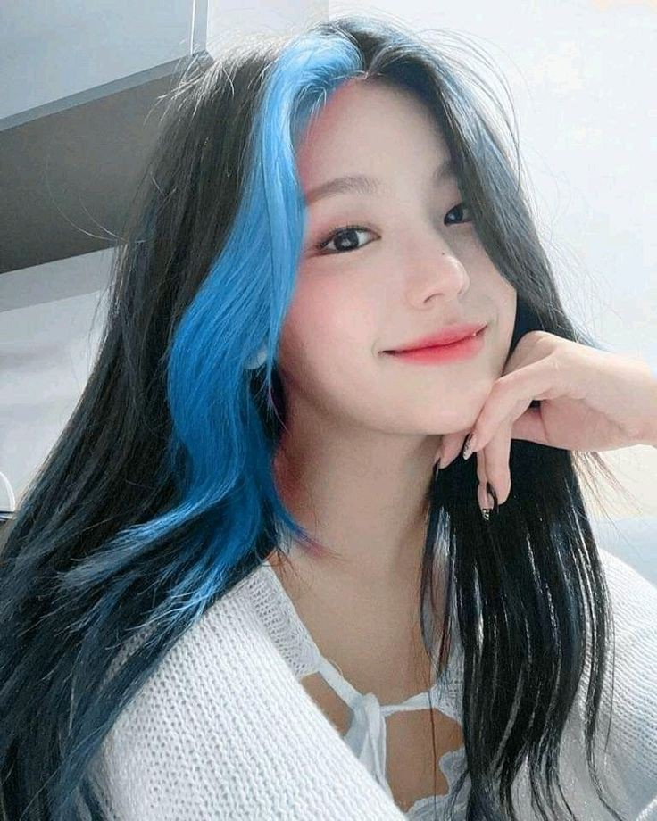
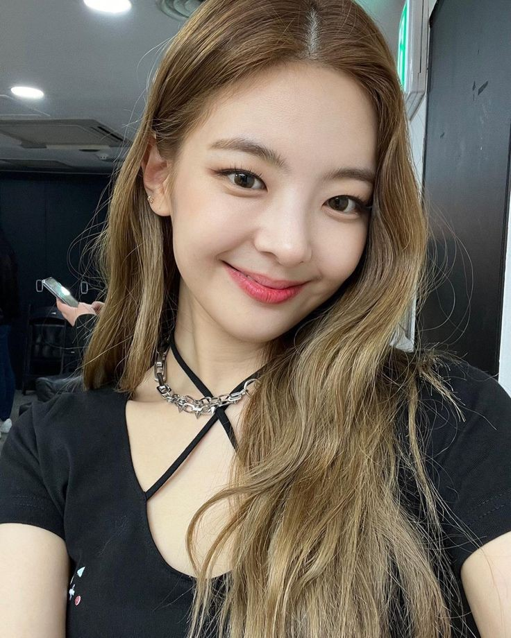

JYP Entertainment هي فرقه كوريه نشات تحت شركه
Dalla Dallaترسمت الفرقه في تاريخ 12/2/2019 باغنيه
ومعناه الثقه ويعني ان الثقه متبادله بين الفانز و العضوات midzy اسم الفاندوم
هي اشهر فرقه في الجيل الرابع
itzy:instagram_itzy.all.in.us itzy:Facebook_itzy itzy:YouTube_itzyyeji
الإسم الحقيقي:هوانق ييجي
Lucy:اسمها الإنجليزي
لونها التعريفي : الأصفر
تاريخ الميلاد : 26/5/2000 الأكبر بين العضوات
السري jyp ملقبة ب سلاح
موقعها : القائدة ، راقصة رئيسية
1-Artist of the month:" River"
2-Mix Maxe: "Brek my heart"
3-my heart Yeji and ryujin with bebe rexha
4-cover b-day:Uchiagehanbi
5-Cron On My Head من كتابتها وانتاجها وتلحينها
حاجزال50مليون مشاهده اعلي نسبه مشاهدات علي القناتStudio Choom تخطي كوفر الرقص الخاص بها في
تعلمت الرقص وهي في سن 10 علي الرغم من أنها كانت تكرهه في البداية
stray kids عضو فرقه Hyunjin يتم تشبيهها ب
loco تعتبر أسرع عضوه في حفظ الرقصات ، كما شاركت في تصميم رقصة
تحب تناول الشوكولاته و السناكس و الطعام الحار تجيد اللغة التايلاندية و اليابانية و الإنجليزية تتقن العزف علي البيانو تعتبر ريوجين هي الاقرب منها
yeji:Instagram_yezyizhereChaeryeong
الإسم الحقيقي: لي تشايريونق
Judy:اسمها الإنجليزي
تاريخ ميلادها : 5/6/2001
موقعها : راقصة رئيسية ، رابر و مغنية مساعدة
طولها:168
kg وزنها:46
B:فصيلة دمها
1-Artist of the month: Cry for me
2-covr b-day: Blueming
3-Doremifasollatido
4-Chaeryeong goes to k University(اجزاء 4)
5-Mine من كتابتها وانتاجها و تلحينها
السابقه واخت اصغر منهاIZ*ONEعضو فرقهChaeyeonلديها اخت اكبر منها هي
twiceالخاص بترسيم فرقه Sixteenاشتهرت منذ صغرها مع اختها بسبب انضمامهما ل برنامج
وكان من المقرر أن تترسم مع توايس ولكن تم اقصاؤها في آخر جولة
كان سيتم الإختيار بينها وبين أختها في الترسيم لكن اختها تشايون انسحب بعد ذلك
وتنضم الي شركه اخريjypلتترك مجالًا لأختها وتغادر
"2012تدربت لمده 5 سنوات " مدة التدريب فقط لكنها انضمت للوكالة مع اختها في
بدأت الرقص في عمر 12 سنة مع اختها وكانت معلمتها الأولي هي والدتها
تعتبر أمهر العضوات في الرمايه و اكثر خفه و مرونه في الرقص
loco كما شاركت في تصميم رقصه
الي مليون مشاهد كما مدحتها و شجعتهاStudio Choomوصل كوفر الرقص الخاص بها علي
بعد مشاهدة فيديو الرقص الخاص بها Camillaالمغنيه
تجيد اللغة الإنجليزية و الإندونيسية و اليابانية
تخاف بسرعه كما تخاف من الحيوانات
معروفه بشخصيتها اللطيفة كما أنها تتأثر بسرعه بالتعليقات السلبية
تعتبر ليا ، ريوجين الاقرب لها
Chaeryeong:instagram_chaerrry0ryujin
الإسم الحقيقي: شين ريوجين
Joanne:اسمها الإنجليزي
تاريخ ميلادها:17/4/2001
موقعها : رابر رئيسية ، راقصة ثانوية ، سنتر ، فوكال مساعدة
164:طولها
kgوزنها:47
B:فصيلة الدم
1-Artisr Of The Month:" Therefore I Am"
2-Mix Max: : "Brek my heart"
3-Brek my heart Yeji and ryujin with bebe rexha
4-cover b-day: Every Second
5-Run Away من كتابتها وانتاجها وتلحينها
Got7صرحت بأنها معجبة كبيره ب فرقة
jypكما كانت في حفل توقيع للفرقة وقابلها أحد العاملين في شركة
وعرض عليها ان تشترك في تجارب الأداء وتم قبولها
تدربت لمدة 4 سنوات
وفازت بالمركز الاول yg الخاص بشركة MixNine شاركت في برنامج
jypالانضمام لوكالته لأنه معجب بقدراتها ولكنها قررت البقاء فيygعرض عليها رئيس شركة
تلقت المدح أيضا من جيني عضوه بلاكبينك التي شجعتها مع فرقتها في المسابقة
جيهوب و جيمين في فيديو ل بانقتان بعنوانBtsشاركت في التمثيل مع عضو
Love yourself : Hightlight reel
تعتبر اقوي العضوات وأكثرهم تحملاً
girl crushتلقب نفسها ب"فتي الفرقة"وأطلق عليها المعجبون لقب
Wannabeاشتهرت بسرعه بسبب رقصه الذراعين الخاصة بأغنية
yejiكما تعتبر أشهر عضوة في الفرقة بجانب
ل20مليون مشاهدةStudio Choomوصل كوفر الرقص الخاص بها علي
Neverthelessبطلة دراماHan so heeوممثلتها المفضلة هيLee Hyoriقدوتها هي المغنية
معروفه بشخصتها الفريده والمخيفه كما تحب دائما إغاظة العضوات وخاصة ييجي
تجيد اللغة الإنجليزية ، الإسبانية و اليابانية
تتقن العزف علي الجيتار
تعتبر ييجي الاقرب لها
ryujin:instagram_iamfinethankyouandryuLia
الإسم الحقيقي: تشوي جيسو
Julia:اسمها الإنجليزي
تاريخ ميلادها: 21/7/2000
موقعها : فوكال رئيسية ، رابر مساعدة
طولها:162
kgوزنها:43
A:فصيلة الدم
هي أكثر العضوات مرونه و ذكائًا
1- Always be your star " OST "
2- Blue flower " OST "
3-Blossom من كتابتها وانتاجها وتلحينها
4-cover b-day:keep me waiting
لديها أخ اصغر منها
هي من عائلة غنية ، كما درست في كندا لذلك تتحدث اللغة الإنجليزية بطلاقة
لكنها تركتهاsmكانت متدربة سابقة في وكالة
تدربت لمدة سنتان ، فيديو التدريب الأول الخاص بها " غنائها " تم تصويره في استوديو مدرستها
تحب تناول المعكرونه ، العسل و الفاكهة كما تكره الخضروات وخصوصا الخيار " تظن أن طعمه يشبه الكهرباء
قدوتها هي والدتها
من ريد فيلفتIreneوJisooيعتقد المعجبون انها خليط من
تخطي ال 8 مليون مشاهدةPrice tagالكوفر الخاص بها لأغنية
معروفه بصوتها الجميل جدا و قدرتها علي التلاعب بصوتها
تجيد اللغة الإنجليزية و اليابانية
تعلمت العزم علي الطبول و البيانو و الفلوت و تتقن العزف علي الجيتار
تعتبر ييجي و يونا الاقرب لها
lia:instagram_lia_lovesyuna
الإسم الحقيقي: شين يونا
Hussey:اسمها الإنجليزي
تاريخ ميلادها 9/12/2003
موقعها : رابر فرعية ، راقصة فرعية ، مغنية مساعدة ، فيجوال ، ماكيني
طولها:172
kg48:وزنها
A:فصيلة دمها
1-cover b-day: Prefect To Me
2-Yet, but من كتابتها وانتاجها و تلحينها
لديها أخت اكبر منها
مدة تدريبها 3 سنوات
الشركهSomiانضمت للفرقة بعد مغادرة
كان من المقرر أن تكون سومي هي العضوة الخامسة في الفرقة لكنها غادرت قبل الترسيم فتم استبدالها ب يونا
Love yourself : Hightlight reel جنغكوك في التمثيل في فيديوBTSكانت رفيقة عضو
بجانب ريوجين
تعتبر أكثر العضوات قوة بجانب ريوجين ، كما أنها محترفة في رياضة الفلوربول وحصلت علي المركز الأول فيها " تشبه الهوكي
تحب تناول البيتزا وخاصة البيبيروني
يقول العضوات انها مثل فيروس السعادة في الفرقة وأنها دائما تضحكهم وتعطيهم الطاقة
بطلة دراما أسطورة البحر الأزرق و حبيبي من نجم آخرJun Ji Hyunممثلتها المفضلة هي
ماهرة في العزف علي الفلوت
تجيد اللغة الإنجليزية ، الإندونيسية ، اليابانية ، الصينية
تعتبر ليا الاقرب لها
YooAتعاون بين: ريوجين من اتزي إينبي من ايزون سينب من جي فريند
Bossمن اوه ماي جيرل بعنوان
Rain on meتعاون بين: الأختين تشاريونغ و تشايون بمسرح خاص و كوفر دانس لأغنية
تعاون بين: يونا و تشاريونغ من اتزي ويندي من ريد فيلفت سييون و يون من ستاي سي ونجيونج
Way to goو يوجين من ايفي يونا من براف جيرلز جيهو من اوه ماي جيرلز بعنوان
City of starsتعاون بين ليا من اتزي بانجتشان و فيليكس من ستراي كيدز بعنوان
تعاون بين ريوجين من اتزي ميني من جي إيدل ايسا من ستاي سي تشايون - أخت تشاريونغ
Fictionبعنوان
تعاون بين ييجي من اتزي ونجيونج و يوجين من ايفي مينجو
Rum pum pumالعضوة السابقة في فرقة ايزون ميون من جي ايدل بعنوان
Diva:تعاون بين : جي ايدل و اتزي
تعاون بين: سوجين العضوة السابقة لايدل و سيون من ايدل مع
عضوات ازوان و ييجي و ريوجين من اتزي minju و yuri
reflection fifth بعنوان
lia and han and juyeon:تعاون بين
Play That Summer بعنوان
تعاون بين: ييجي و هيونجين
River&play with fire بعنوان
yuna:instagram_igotyuandme1~IT'Z Different
Dalla Dalla:الأغنية الرئيسية
Want it:الجانبية
2~ IT'Z ICY
ICY:الأغنيةالرئيسية
Cherry:IT'z Summer:الجانبية
3~IT'Z ME
Wannabe:الأغنية الرئيسية
I don't wanna dance:24 hours:Nobody like you:Ting Ting Ting :الجانبية
You make Me:That's No No
4~ Not Shy
Not Shy:الأغنية الرئيسية
Be in love:Surf:ID:Louder:Don't give a what :الجانبية
5~Guess Who
Mafia In The Morning:الأغنية الرئيسية
Wild wild west:Tennis ( O:O ):Kidding Me:Sorry Not Sorry:Shoot:الجانبية
6~ Crazy in love ( أول ألبوم كامل )
Loco:الأغنية الرئيسية
Chillin' Chillin':Gase me up:Love is :#Twenty:Swipe:الجانبية
B [ OO ] M-Boxx :Sooo lucky:Mirror:
7~ Voltage ( ألبوم ياباني )
Voltage:الأغنية الرئيسية
Spice:الجانبية
8~ Checkmate
Sneakers:الأغنية الرئيسية
What I want:365:Free fall:RAC3R:Domino:الجانبية
9~ Blah Blah Blah ( ألبوم ياباني )
Blah Blah Blah:الأغنية الرئيسية
Can't tie me down:الجانبية
10~Cheshire
Cheshire:الأغنية الرئيسية
Snowy:Freaky:Boys like you:الجانبية
11~kill my doubt
Cake:الاغنية الرئيسية
Psychic lover:kill shot :bratty:Bet on me:None of my business :الجانبية
12~ Ringo (اول البوم ياباني كامل)
Ringo:الاغنية الرئيسة
trust me:cheshire:sneakers:Style:Style:Playlist:Sugon-holic:الجانبية
13~ Bron to be
UNTØUCHABLE:الاغنية الرئيسية
Solo lia blossom :Solo Yeji crown on my head:Mr.vampire:Bron to be:الجانبية
Escaiator:Dynamit:Solo yuna yet.be:Solo Chaeryeong mine:Solo ryujin run Away
14~Algorhythm ( البوم ياباني )
Algorhythm:الرئيسية
No Biggie (Instrumental):Algorhythm (Instrumental):No Biggie:الجانبية